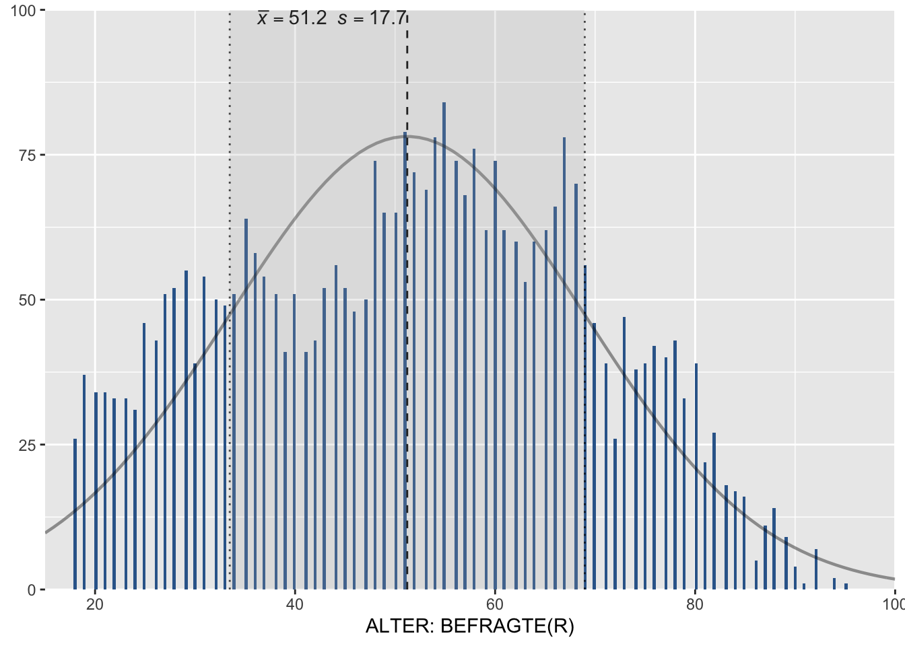

4 Uni- und Bivariate Datenanalyse
4.1 Gewichtung
4.2 Univariate Statistiken
| Packet | Funktion | Verwendung |
|---|---|---|
| sjmisc | frq() | Häufigkeitstabelle |
| sjmisc | descr() | Despriptive Statistiken ausgeben |
| sjmisc | weighted_mean() | Mittelwert berechnen |
| sjmisc | weighted_median() | Median berechnen |
| sjmisc | weighted_sd() | Standardabweichung berechnen |
| sjmisc | weighted_se() | Standardfehler berechnen |
| weights | wtd.quantile() | Quantile berechnen |
Frq()
Syntax:
# Ohne Pipe
frq(datensatz$variable1, weights = datensatz$gewicht)
# Mit Pipe
datensatz %>%
frq(variable1, weights = gewicht)Beispielcode:
# Häufigkeitstabelle Leistungsprinzip (im19)
allbus2018 %>% frq(im19, weights = wghtpew)
#>
#> EINKOMMENSDIFFERENZ ERHOEHT MOTIVATION (im19) <numeric>
#> # total N=3370 valid N=3370 mean=2.49 sd=0.93
#>
#> Value | Label | N | Raw % | Valid % | Cum. %
#> --------------------------------------------------------------
#> 1 | STIMME VOLL ZU | 532 | 15.79 | 15.79 | 15.79
#> 2 | STIMME EHER ZU | 1186 | 35.19 | 35.19 | 50.98
#> 3 | STIMME EHER NICHT ZU | 1132 | 33.59 | 33.59 | 84.57
#> 4 | STIMME GAR NICHT ZU | 520 | 15.43 | 15.43 | 100.00
#> <NA> | <NA> | 0 | 0.00 | <NA> | <NA>Descr()
Syntax:
# Ohne Pipe
descr(datensatz$variable1, weights = datensatz$gewicht)
# Mit Pipe
datensatz %>%
descr(variable1, weights = gewicht)Beispielcode:
# Deskriptive Statistiken Leistungsprinzip (im19)
allbus2018 %>% descr(im19, weights = wghtpew)
#>
#> ## Basic descriptive statistics
#>
#> var type label n NA.prc mean sd se
#> im19 numeric EINKOMMENSDIFFERENZ ERHOEHT MOTIVATION 3370 2.99 2.49 0.93 0.02
#> range iqr skew
#> 3 (1-4) 1 0.01
allbus2018 %>% descr(im19, weights = wghtpew, show = "short")
#>
#> ## Basic descriptive statistics
#>
#> var n NA.prc mean sd
#> im19 3370 2.99 2.49 0.93Weighted_mean()
Syntax:
# Ohne Pipe
weighted_mean(datensatz$variable1, weights = datensatz$gewicht)
# Mit Pipe
# Achtung! %$% Operator
datensatz %$%
weighted_mean(variable1, weights = gewicht)Beispielcode:
# Mittelwert Leistungsprinzip (im19)
allbus2018 %$%
weighted_mean(im19, weights = wghtpew)
#> [1] 2.48678
# Mittelwert Leistungsprinzip (im19) als neue Variable
ds <- allbus2018 %>%
transmute(mittelLeistung = weighted_mean(im19, weights = wghtpew))
ds
#> # A tibble: 3,477 x 1
#> mittelLeistung
#> <dbl>
#> 1 2.49
#> 2 2.49
#> 3 2.49
#> 4 2.49
#> 5 2.49
#> 6 2.49
#> 7 2.49
#> 8 2.49
#> 9 2.49
#> 10 2.49
#> # … with 3,467 more rowsWeighted_median()
Syntax:
# Ohne Pipe
weighted_median(datensatz$variable1, weights = datensatz$gewicht)
# Mit Pipe
# Achtung! %$% Operator
datensatz %$%
weighted_median(variable1, weights = gewicht)Beispielcode:
# Median Leistungsprinzip (im19)
allbus2018 %$%
weighted_median(im19, weights = wghtpew)
#> [1] 2
# Median Leistungsprinzip (im19) als neue Variable
ds <- allbus2018 %>%
mutate(medianLeistung = weighted_median(im19, weights = wghtpew)) %>%
distinct(medianLeistung)
ds
#> # A tibble: 1 x 1
#> medianLeistung
#> <dbl>
#> 1 2Weighted_sd()
Syntax:
# Ohne Pipe
weighted_sd(datensatz$variable1, weights = datensatz$gewicht)
# Mit Pipe
# Achtung! %$% Operator
datensatz %$%
weighted_sd(variable1, weights = gewicht)Beispielcode:
# Mittelwert und Standardabweichung Leistungprinzip nach Ost-West (Fälle)
ds <- allbus2018 %>%
select(eastwest, im19, wghtpew) %>%
group_by(eastwest) %>%
mutate(leistungMittelOstWest = weighted_mean(im19, weights = wghtpew),
leistungSDOstWest = weighted_sd(im19, weights = wghtpew)) %>%
ungroup()
ds %>%
select(eastwest, leistungMittelOstWest, leistungSDOstWest)
#> # A tibble: 3,477 x 3
#> eastwest leistungMittelOstWest leistungSDOstWest
#> <dbl> <dbl> <dbl>
#> 1 1 2.46 0.923
#> 2 2 2.60 0.985
#> 3 1 2.46 0.923
#> 4 2 2.60 0.985
#> 5 2 2.60 0.985
#> 6 1 2.46 0.923
#> 7 1 2.46 0.923
#> 8 1 2.46 0.923
#> 9 1 2.46 0.923
#> 10 2 2.60 0.985
#> # … with 3,467 more rowsWeighted_se()
Syntax:
# Ohne Pipe
weighted_se(datensatz$variable1, weights = datensatz$gewicht)
# Mit Pipe
# Achtung! %$% Operator
datensatz %$%
weighted_se(variable1, weights = gewicht)Beispielcode:
# Mittelwert, Standardabweichung und Standardfehler Leistungprinzip nach Ost-West (Gruppen)
ds <- allbus2018 %>%
select(eastwest, im19, wghtpew) %>%
group_by(eastwest) %>%
summarise(leistungMittelOstWest = weighted_mean(im19, weights = wghtpew),
leistungSDOstWest = weighted_sd(im19, weights = wghtpew),
leistungSEOstWest = weighted_se(im19, weights = wghtpew)) %>%
ungroup()
ds
#> # A tibble: 2 x 4
#> eastwest leistungMittelOstWest leistungSDOstWest leistungSEOstWest
#> <dbl> <dbl> <dbl> <dbl>
#> 1 1 2.46 0.923 0.0192
#> 2 2 2.60 0.985 0.0302
# Mittelwert, Standardabweichung, Standardfehler und .95 Konfidenzintervall Leistungprinzip nach Ost-West (Gruppen)
ds <- allbus2018 %>%
group_by(eastwest) %>%
summarise(leistungMittelOstWest = weighted_mean(im19, weights = wghtpew),
leistungSDOstWest = weighted_sd(im19, weights = wghtpew),
leistungSEOstWest = weighted_se(im19, weights = wghtpew),
CI.95.down = leistungMittelOstWest-1.96*(leistungSDOstWest/sqrt(n())),
CI.95.up = leistungMittelOstWest+1.96*(leistungSDOstWest/sqrt(n()))) %>%
ungroup()
ds
#> # A tibble: 2 x 6
#> eastwest leistungMittelOstWest leistungSDOstWest leistungSEOstWest CI.95.down
#> <dbl> <dbl> <dbl> <dbl> <dbl>
#> 1 1 2.46 0.923 0.0192 2.43
#> 2 2 2.60 0.985 0.0302 2.55
#> # … with 1 more variable: CI.95.up <dbl>wtd.quantile()
library(weights)Syntax:
# Ohne Pipe
wtd.quantile(datensatz$variable1, weights = datensatz$gewicht)
# Mit Pipe
# Achtung! %$% Operator
datensatz %$%
wtd.quantile(variable1, weights = gewicht)Beispielcode:
# Quantile Alter
allbus2018 %$%
wtd.quantile(age, weights = wghtpew)
#> 0% 25% 50% 75% 100%
#> 18 36 52 65 954.3 Bivariate Statistiken
Tabelle mit Funktionen
Crosstab()
library(descr)
# Achtung! Überschreibt sjmisc::descr
# Paket sjmisc deaktivieren und nochmal aktivieren
detach("package:sjmisc", unload = TRUE)
library(sjmisc)Syntax:
# Ohne Pipe
crosstab(datensatz$variable1, datensatz$variable2, weights = datensatz$gewicht)
# Mit Pipe
# Achtung! %$% Operator
datensatz %$%
crosstab(variable1, variable2, weight = gewicht)Beispielcode:
# Kreuztabelle Geschlecht (sex) und Bildung (educ) - Absolute Häufigkeit
# ohne Grafik
allbus2018 %$%
crosstab(sex, educ, weight = wghtpew, plot = F)
#> Cell Contents
#> |-------------------------|
#> | Count |
#> |-------------------------|
#>
#> =================================================================================
#> ALLGEMEINER SCHULABSCHLUSS
#> GESCHLECHT, BEFRAGTE(R) 1 2 3 4 5 6 7 Total
#> ---------------------------------------------------------------------------------
#> 1 31 445 519 185 570 12 13 1775
#> ---------------------------------------------------------------------------------
#> 2 23 408 575 140 531 10 11 1698
#> ---------------------------------------------------------------------------------
#> Total 54 853 1094 325 1101 22 24 3473
#> =================================================================================
# Kreuztabelle Geschlecht (sex) und Bildung (educ) - relative Häufigkeit nach Spalten
# ohne Grafik
allbus2018 %$%
crosstab(sex, educ, weight = wghtpew, prop.c = T, plot = F)
#> Cell Contents
#> |-------------------------|
#> | Count |
#> | Column Percent |
#> |-------------------------|
#>
#> ========================================================================================
#> ALLGEMEINER SCHULABSCHLUSS
#> GESCHLECHT, BEFRAGTE(R) 1 2 3 4 5 6 7 Total
#> ----------------------------------------------------------------------------------------
#> 1 31 445 519 185 570 12 13 1775
#> 57.4% 52.2% 47.4% 56.9% 51.8% 54.5% 54.2%
#> ----------------------------------------------------------------------------------------
#> 2 23 408 575 140 531 10 11 1698
#> 42.6% 47.8% 52.6% 43.1% 48.2% 45.5% 45.8%
#> ----------------------------------------------------------------------------------------
#> Total 54 853 1094 325 1101 22 24 3473
#> 1.6% 24.6% 31.5% 9.4% 31.7% 0.6% 0.7%
#> ========================================================================================
# Kreuztabelle Geschlecht (sex) und Bildung (educ) - relative Häufigkeit nach Zeilen
# ohne Grafik
allbus2018 %$%
crosstab(sex, educ, weight = wghtpew, prop.r = T, plot = F)
#> Cell Contents
#> |-------------------------|
#> | Count |
#> | Row Percent |
#> |-------------------------|
#>
#> =====================================================================================
#> ALLGEMEINER SCHULABSCHLUSS
#> GESCHLECHT, BEFRAGTE(R) 1 2 3 4 5 6 7 Total
#> -------------------------------------------------------------------------------------
#> 1 31 445 519 185 570 12 13 1775
#> 1.7% 25.1% 29.2% 10.4% 32.1% 0.7% 0.7% 51.1%
#> -------------------------------------------------------------------------------------
#> 2 23 408 575 140 531 10 11 1698
#> 1.4% 24.0% 33.9% 8.2% 31.3% 0.6% 0.6% 48.9%
#> -------------------------------------------------------------------------------------
#> Total 54 853 1094 325 1101 22 24 3473
#> =====================================================================================
# Kreuztabelle Geschlecht (sex) und Bildung (educ) - relative Häufigkeit nach Gesamthäufigkeit
# ohne Grafik
allbus2018 %$%
crosstab(sex, educ, weight = wghtpew, prop.t = T, plot = F)
#> Cell Contents
#> |-------------------------|
#> | Count |
#> | Total Percent |
#> |-------------------------|
#>
#> ====================================================================================
#> ALLGEMEINER SCHULABSCHLUSS
#> GESCHLECHT, BEFRAGTE(R) 1 2 3 4 5 6 7 Total
#> ------------------------------------------------------------------------------------
#> 1 31 445 519 185 570 12 13 1775
#> 0.9% 12.8% 14.9% 5.3% 16.4% 0.3% 0.4%
#> ------------------------------------------------------------------------------------
#> 2 23 408 575 140 531 10 11 1698
#> 0.7% 11.7% 16.6% 4.0% 15.3% 0.3% 0.3%
#> ------------------------------------------------------------------------------------
#> Total 54 853 1094 325 1101 22 24 3473
#> ====================================================================================
# Kreuztabelle Geschlecht (sex) und Bildung (educ) - relative Häufigkeit mit Chi-Quadrat nach Zellen
# ohne Grafik
allbus2018 %$%
crosstab(sex, educ, weight = wghtpew, prop.chisq = T, plot = F)
#> Cell Contents
#> |-------------------------|
#> | Count |
#> | Chi-square contribution |
#> |-------------------------|
#>
#> ========================================================================================
#> ALLGEMEINER SCHULABSCHLUSS
#> GESCHLECHT, BEFRAGTE(R) 1 2 3 4 5 6 7 Total
#> ----------------------------------------------------------------------------------------
#> 1 31 445 519 185 570 12 13 1775
#> 0.419 0.188 2.880 2.150 0.095 0.051 0.044
#> ----------------------------------------------------------------------------------------
#> 2 23 408 575 140 531 10 11 1698
#> 0.438 0.196 3.010 2.247 0.099 0.053 0.046
#> ----------------------------------------------------------------------------------------
#> Total 54 853 1094 325 1101 22 24 3473
#> ========================================================================================
# Kreuztabelle Geschlecht (sex) und Bildung (educ) - relative Häufigkeit nach Spalten
# mit Chi-Quadrat-Test
# mit Grafik
allbus2018 %$%
crosstab(sex, educ, weight = wghtpew, prop.c = T, chisq = T)
#> Cell Contents
#> |-------------------------|
#> | Count |
#> | Column Percent |
#> |-------------------------|
#>
#> ========================================================================================
#> ALLGEMEINER SCHULABSCHLUSS
#> GESCHLECHT, BEFRAGTE(R) 1 2 3 4 5 6 7 Total
#> ----------------------------------------------------------------------------------------
#> 1 31 445 519 185 570 12 13 1775
#> 57.4% 52.2% 47.4% 56.9% 51.8% 54.5% 54.2%
#> ----------------------------------------------------------------------------------------
#> 2 23 408 575 140 531 10 11 1698
#> 42.6% 47.8% 52.6% 43.1% 48.2% 45.5% 45.8%
#> ----------------------------------------------------------------------------------------
#> Total 54 853 1094 325 1101 22 24 3473
#> 1.6% 24.6% 31.5% 9.4% 31.7% 0.6% 0.7%
#> ========================================================================================
#>
#> Statistics for All Table Factors
#>
#> Pearson's Chi-squared test
#> ------------------------------------------------------------
#> Chi^2 = 11.91607 d.f. = 6 p = 0.0639
#>
#> Minimum expected frequency: 10.75612Weighted_chisqtest()
Syntax:
# Ohne Pipe
weighted_chisqtest(datensatz$variable1, datensatz$variable2, weights = datensatz$gewicht)
# Mit Pipe
datensatz %>%
weighted_chisqtest(variable1, variable2, weights = gewicht)Beispielcode:
# Chi-Quadrat-Test Geschlecht (sex) und Bildung (educ)
allbus2018 %>%
weighted_chisqtest(sex, educ, weights = wghtpew)
#>
#> # Measure of Association for Contingency Tables
#>
#> Chi-squared: 11.9161
#> Cramer's V: 0.0586
#> df: 6
#> p-value: 0.064
#> Observations: 3473Crosstable_statistiscs()
Syntax:
# Ohne Pipe
crosstable_statistics(datensatz$vaiable1, datensatz$variable2, weights = datensatz$gewicht,
statistics = c("phi", "cramer", "spearman", "kendall", "fisher"))
# Mit Pipe
allbus2018 %>%
crosstable_statistics(variable1, variable2, weights = gewicht,
statistics = c("phi", "cramer", "spearman", "kendall", "fisher"))Beispielcode:
# Phi Geschlecht (sex) und Ost West (eastwest)
allbus2018 %>%
crosstable_statistics(sex, eastwest, weights = wghtpew, statistics = "phi")
#>
#> # Measure of Association for Contingency Tables
#>
#> Chi-squared: 0.0769
#> Phi: 0.0055
#> df: 1
#> p-value: 0.781
#> Observations: 3477
# Cramers V Geschlecht (sex) und Bildung (educ)
allbus2018 %>%
crosstable_statistics(sex, educ, weights = wghtpew, statistics = "cramer")
#>
#> # Measure of Association for Contingency Tables
#>
#> Chi-squared: 11.9161
#> Cramer's V: 0.0586
#> df: 6
#> p-value: 0.064
#> Observations: 3473
# Spearman`s rho Leistungsprinzip (im19) und Befürwortung von Ungleichheit (im20)
allbus2018 %>%
crosstable_statistics(im19, im20, weights = wghtpew, statistics = "spearman")
#> Warning in cor.test.default(x = data[[1]], y = data[[2]], method = statistics, :
#> Cannot compute exact p-value with ties
#>
#> # Measure of Association for Contingency Tables
#>
#> S: 2913791351.3356
#> Spearman's rho: 0.5148
#> df: 9
#> p-value: < .001***
#> Observations: 3298Weighted_correlation()
Syntax:
# Ohne Pipe
weighted_correlation(datensatz$variable1, datensatz$variable2, weights = datensatz$gewicht)
# Mit Pipe
datensatz %>%
weighted_correlation(variable1, variable2, weights = gewicht)Beispielcode:
# Pearsons r Leistungsprinzip (im19) und Befürwortung von Ungleichheit (im20)
allbus2018 %>%
weighted_correlation(im19, im20, weights = wghtpew)
#>
#> Weighted Pearson's Correlation Coefficient
#>
#> estimate [95% CI]: 0.515 [0.493 0.536]
#> p-value: 0.0004.4 Grafiken
Plot_frq()
Syntax:
# Ohne Pipe
plot_frq(datensatz$variable1, weight.by = datensatz$gewicht)
# Mit Pipe
# Achtung! %$% Operator
datensatz %$%
plot_frq(variable1, weight.by = gewicht)
Beispielcode:
# Garfik zur Häufigkeitsverteilung Bildung (educ)
allbus2018 %$%
plot_frq(educ, weight.by = wghtpew, coord.flip = T, hjust = "left", type = "dot", show.ci = T,
expand.grid = T, vjust = "bottom", sort.frq = "desc")
# Garfik zur Häufigkeitsverteilung Alter (age)
# mit Normalverteilungskurve, Mittelwert und Standardabweichung
allbus2018 %$%
plot_frq(age, weight.by = wghtpew, type = "h", show.mean = TRUE, show.mean.val = TRUE,
normal.curve = TRUE, show.sd = TRUE, normal.curve.color = "black")
# Grafik Alter
allbus2018 %$%
plot_frq(age, weight.by = wghtpew, type = "violin", show.values = F)
Plot_likert()
Syntax:
# Ohne Pipe
plot_likert(datensatz$variable1, weight.by = datensatz$gewicht)
# Mit Pipe
# Nicht gut zu handhaben!Beispielcode:
# Grafik zur Verteilung von Ausprägungsmerkmalen des Likert-Typs
plot_likert(allbus2018[c("im19", "im20", "im21", "id01")], grid.range = c(.8, .8), values = "sum.inside",
show.prc.sign = T, weight.by = allbus2018$wghtpew)
# Grafik zur Verteilung von Ausprägungsmerkmalen des Likert-Typs nach Komponenten
# Farbauswahl mit RColorBrewer::display.brewer.all()
plot_likert(allbus2018[c("im19", "im20", "im21", "id01")], c(1,1,2,2), grid.range = c(1.1, 1.1), values = "sum.outside",
show.prc.sign = T, weight.by = allbus2018$wghtpew, legend.pos = "none")Plot_stackfrq()
Syntax:
# Ohne Pipe
plot_stackfrq(datensatz$variable1, weight.by = datensatz$gewicht)
# Mit Pipe
# Nicht gut zu handhaben!Beispielcode:
# Verteilung der Ausprägungsmerkmalen
# Farbauswahl mit RColorBrewer::display.brewer.all()
plot_stackfrq(allbus2018[c("im19", "im20", "im21", "id01")], weight.by = allbus2018$wghtpew, expand.grid = T, geom.colors = "Greens",
wrap.labels = 1, wrap.legend.labels = 1)
Plot_grpfrq()
Syntax:
# Ohne Pipe
# Mit Pipe
Beispielcode:
Plot_xtab()
Syntax:
# Ohne Pipe
# Mit Pipe
Beispielcode:
Save_plot()
Syntax:
# Ohne Pipe
# Mit Pipe
Beispielcode: